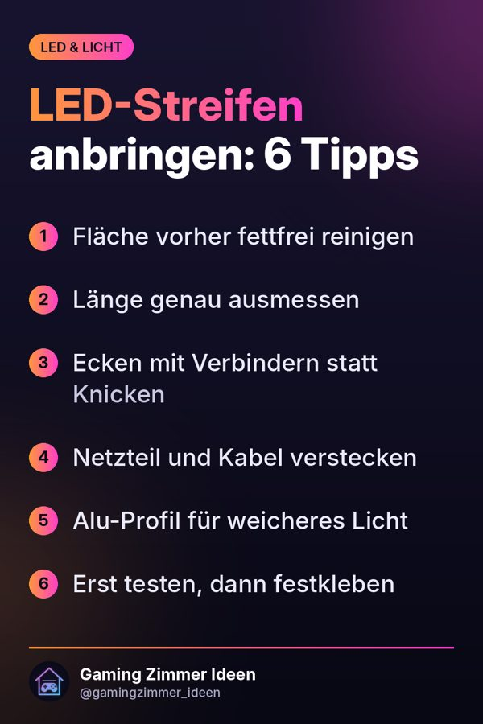

Ideen › LED Beleuchtung Gaming Zimmer
LED-Streifen richtig anbringen: 6 Tipps, damit nichts abfällt

LED Streifen anbringen wie ein Profi: Fläche vorher fettfrei reinigen, Länge genau ausmessen, Ecken mit Verbindern statt Knicken, Netzteil und Kabel verstecken, ein Alu-Profil für weicheres Licht nutzen und erst testen, dann festkleben. So hält deine Beleuchtung und sieht sauber aus. Jetzt merken!
Auf einen Blick
- Fläche vorher fettfrei reinigen
- Länge genau ausmessen
- Ecken mit Verbindern statt Knicken
- Netzteil und Kabel verstecken
- Alu-Profil für weicheres Licht
- Erst testen, dann festkleben